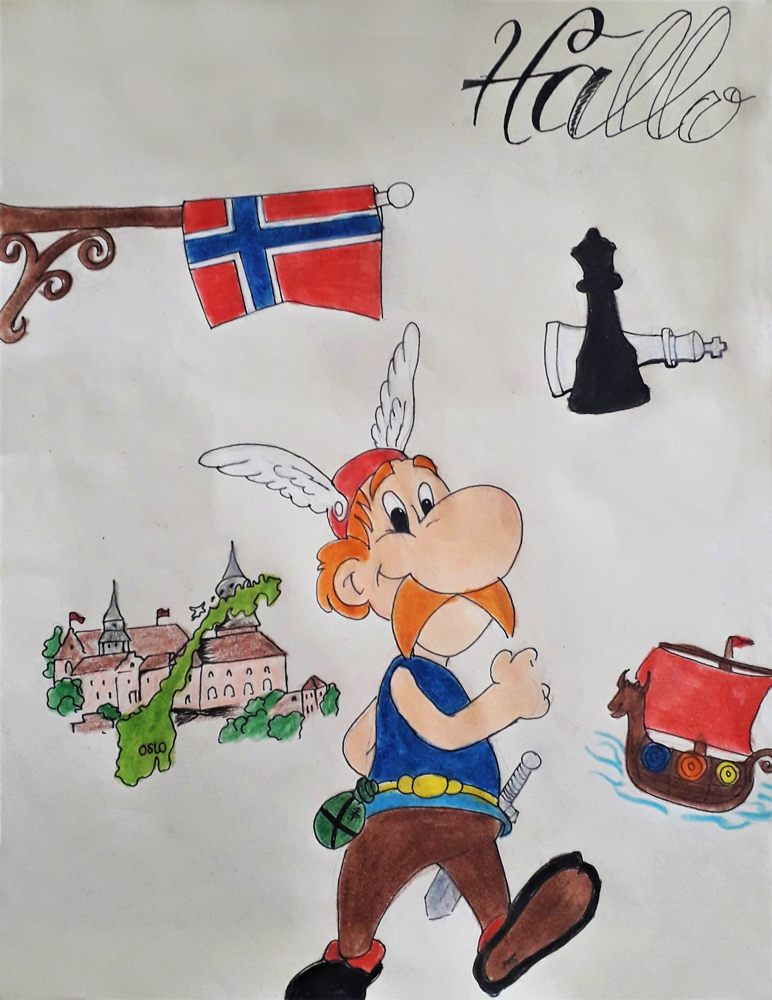
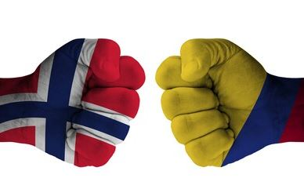
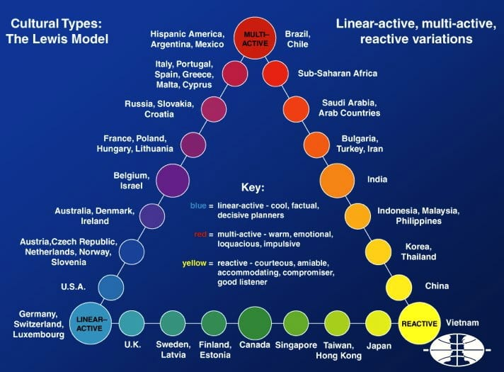

Welcome to my personal space about this beautiful country that we call Norway. Here in this blog we talk about everything about their culture, customs and traditions over time, as well as their changes and advances today. Feel at home, enjoy this wonderful tour and the opportunity to learn more about our country!
Norway - Stereotypes over time
Some facts are false or not ...?

Norway stereotypes
Norway, "What is the first thing that comes to mind when you hear this word?" Vikings, Nordics, Nobel prizes, Oslo, Castles, Magnus Carlsen "etc. These are some of the things that are said when talking about Norway , but are these stereotypes really like that?
To talk about it, it is necessary to go back to the past and observe that the Norwegians were called Vikings, and the physical characteristics were very different from what they are today. Muscular bodies, reddish beard, long hair and orange tone, special helmets, steel shields and an aggressive and detonating personality formed the biotype of Viking society. This society was transported in dragon-shaped ships in the fearsome seas of the Mediterranean and they all lived in special and walled castles in what today constitutes the city of Oslo. Returning to the present, it is strange to see how we went from having those qualities so particular to be more peaceful and formal, stand out in sports such as Chess (the current World Champion is the Norwegian Magnus Carlsen), organize the Nobel prizes together are Sweden and be The best places to live in the world. In this way, it is curious and satisfying that stereotypes represent us positively and are not far from reality.
Norway Vs Colombia: Gender Stereotypes
Are the role of the man and woman same in both countries?

A comparison between Norway and Colombia Gender Stereotypes
In the world there are gender stereotypes that influence the behavior of people in each society and culture. However, in some countries these stereotypes are more evident than others. For example: In Norway, gender equality is more common than in Colombia. In the latter case, women are seen as housewives with childcare responsibilities, men's dependents, uneducated and whose role is being a mother or being seen as object of desire. These characteristics attributed to Colombian women are found mainly in advertisements and commercials, generating an erroneous conception of women and in turn, showing men as the only one who has work in the family and provides money and food, that Dominant, strong, not feeling, professional and independent. Consequently, Colombians tend to have habits based on their gender and make decisions such as: playing sports that imply greater strength or skills (men), performing household chores (women) etc. And they are facts that transcend even companies, which usually pay men more than women for doing the same job.
Colombian women are not so willing to leave housewife role
On the other hand, the opposite is true in Norway: Norwegian women are independent, have great jobs, are self-sufficient, hold important positions in government and don't have specific roles to follow. This is largely due to the fact that gender-based courtesy policies are absent in Norwegian policies. However, there is no complete equality and that is why Norway also presents cases of chauvinism, since work areas such as science are conceived by Norwegians as: men's careers, which is explained due to the greater number of scientists Men than women. Also in Norway, rape rates are very high, which is very contradictory due to the gender equality that exists in the country.
Finally, we can conclude that gender stereotypes influence people's behavior and that, although it is present to a greater extent in one country than another, it still remains to be fought so that it is completely fulfilled.
The Lewis Model: Linear-Active Vs Multi-Active
What would happen if a Norwegian lived in Colombia?
If a person from Norway had to stay in Barranquilla, whether to study or work, it would really be difficult. This is due to the difference in culture between the two countries, which are classified into 2 categories by the Lewis model: Linear-Active (Norway) and Multi-Active.
Linear-Active: are those countries in which its citizens organize their day through schedules, appointments, calendars etc. Therefore they are very punctual with the fulfillment of each plan step by step.
Multi-Active: the inhabitants located in this category are characterized by performing multiple tasks at the same time, so they do not have a fixed schedule and prefer to give priority to reality rather than what is planned in an agenda or schedule.

The lewis model categorize different types of cultures
Once we know this, we realize that the cultural shock between Norway and Colombia can generate many problems for our foreign friend. In Barranquilla people do not follow a schedule as such and as a result, many times the events start late or people attend late, so as a advice it is recommended not to get angry about these situations that will be common in your daily life, as well as make contingency plans based on the minutes I thought it would take a person to attend, for example: an event. That is, if we want to start an event at 8 am, it is best to quote people at 7:30 to make sure they arrive at the desired starting time. In case you have to attend an interview or class, remain punctual as it has been all your life, only this time taking into account that the class will not start at the time of the incident.
Another advice that can be given is that you learn to perform multiple tasks so take your time to do so, in order to understand a little more the Colombian culture and especially Barranquilla Culture.
The Hofstede Model for Cultural Understanding
Will Colombia and Norway have similar scores on this model?
The hofstede model is defined as a model that measures cultures according to next specific criteria:
Power Distance Index (PDI): This dimension indicates the degree of people accept social inequality. The higher the score, people accept more the social inequality.
Individualism Versus Collectivisim (IDV): This criterion shows how much a society is individualistic or collectivist. The higher the score, people are more individualistic.
Masculinity Versus Feminity (MAS): A high score (Masculine) on this dimension indicates that the society will be driven by achievement and success. On the other hand, a low score means consensus, modesty and caring for the weak.
Uncertainty Avoidance Index (UAI): A hight score on this criterion means the degree of no acception to new ideas. The extent to which the members of a culture feel threatened by ambiguous or unknown situations and have created a rigid cofe of belief and a suspicion of unorthodox ideas.
Long Term Orientation Versus Short Term Orientation (LTO): This dimension indicates the degree of preparation for the future through thrift and efforts in education.
Indulgence Versus Restraint (IND): This dimension is defined as the extent to which people try to control their desires and impulses. A high score means it's ok to seek gratification and pleasure.
In this case, we will compare Norway and Colombia Hofstede Model for analyze differences between each one:
The hofstede model: Norway vs Colombia
Power Distance Index
With a 67 score , Colombia culture normalize the inequality as a fact of life. This inequality is accepted in all layers of society, so a single leader can concentrate more power than even an entire team. It will be observed among business leaders and among the highest positions in government. On the contrary, Norway scores low on this criteria (31) which means that Norwegians are independents, believers in human rights and empowers. Managers count on the experience of their team members where authoritarian attitudes are not allowed. Finally, communication is blunt, participative and consensus orientated.
Individualism Versus Collectivisim
While Colombia scores a low of 13, Norway scores a high score of 69 that positions it as an individualistic society. For Colombians, relationships are more important than attending to the task at hand, and when a group of people holds an opinion on an issue, they will be joined by all who feel part of that group. For this reason, Colombia is considered as one of the most collectivist societies. In constrast, for norwegians the “Self” is important and individual, personal opinions are valued and expressed as well as the right to privacy is very important and respected. They have clear lines between work and private life.
Masculinity Versus Feminity
In this dimension, Colombia score (64) compared to Norway score (8) shows bigger diferences between each one. With this score, Colombia is considered as a Masculine society highly success oriented and driven. Colombians are competitive and status-oriented. This means that competition is directed towards members of other social classes not towards those who are perceived as members of your own in-group. On the contrary, Norway scores means that aspects such as , consensus, sympathy for the underdog , enviromental care and leveling with others are the society's base. Teamwork and humans values are also important. It's not about achieve success else caring for the weak.
Uncertainty Avoidance Index
At 80 Colombia has a high score which means that as a nation they are believe in conservative ideas ir order to avoid ambiguity. In this country, emotions are openly expressed , there are rules for everything you do and new ideas are hard to accept. This is also reflected in religion, which is respected, followed by many and conservative. On the other hand, Norway has a score of 50, which does not reflect a clear perspective of the society in this criterion.
Long Term Orientation Versus Short Term Orientation
In this dimension, Both Norway and Colombia scores are low which makes them considered as normative societies. In these societies it is very difficult to change your mind in the face of questions, so you trust your opinion as absolute truth.
Indulgence Versus Restraint
Colombia scores a score of 83, which means that is a indulgent society. People in these kind of societies generally seek gratification and pleasure in order to have fun and enjoy the life. They are optimistic. On the other hand , Norway's score of 55 again does not indicate anything clear.